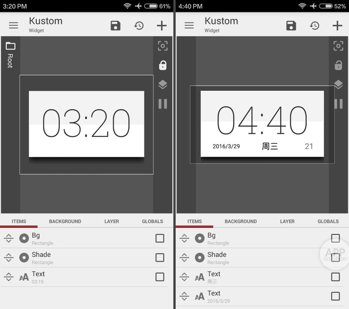

kwgt 版本进化史：从小组件工具到创作者生态的八年
一个 Android 小组件编辑器，从 KLWP 壁纸分支出来，八年迭代长成了 Play 商店上有独立生态分类的创作平台。回看它的迭代节奏，能摸到一支小众团队的决策优先级。
我第一次注意到 kwgt，是在刷 Play 商店的时候看到了一排 "$0.99" 的付费包——不是 App，是 Pack。一个 APK 文件里塞了四十多个预设，装上之后就能在 kwgt 里加载——要用上这些 Pack，先得把 kwgt 本体装好，从下载拿到安装包就行——开发者管这叫"皮肤包"。放在整个 Android 生态里，这种"内容付费给工具"的模式不算新鲜，但在 kwgt 上它长得特别自然。
现在这版的 kwgt官网 已经不是一个"小组件编辑器"能概括的东西了。它的 Weather 模块支持五个数据源切换，图层系统借来了 Blend 混合模式，画布预览实时渲染不用点任何按钮——这些功能散落在样本里看起来互不关联，但串起来看就是一条清晰的迭代线。
现状：现在这版它是什么样
打开编辑器，左侧画布预览区占了半屏，改一个颜色、加一个元素、写一段函数，都会立即渲染在画布上。这个实时预览的体验在三年前是没有的——早期版本你改完要退回到桌面才能看效果，来回折腾是常事。
画布上已经摆放好的元素可以锁定防误触，被锁的元素在画布上会变灰，不能拖动。这个功能看起来小，但对做复杂预设的创作者来说是刚需——一个四乘四的小组件可能堆了十几个元素，手指在画布上挪来挪去很容易碰歪某个图层，锁定之后就不怕了。
Weather 多数据源的支持可能是这两年变化最大的地方。内置了 OpenWeatherMap、Yr.No、Accu Weather、Darksky 四个 Provider，还允许自定义——自己填 API URL 加 JSONPath 就能拉任何数据源。这背后是团队对"不把用户绑死"这件事的坚持，哪怕多数据源意味着更多的兼容问题和更多的用户报错。
图层混合模式的引入则让 kwgt 跳出了普通小组件的框框。Blur 模式做壁纸磨砂效果、XOR 模式做科技感网格、Difference 模式做动态色对比——这些是从专业图像编辑器借过来的能力，放在小组件上让 iOS 风格的磨砂卡片第一次在 Android 上也能不妥协地还原，想系统了解这些模式的组合玩法可以去kwgt文档里翻图层混合那章。

来路：它从哪起步
样本文档没有提 kwgt 的具体版本号历史，连早期 1.x 和 2.x 的分界点都找不到。这不太像一个成熟软件的文档策略——正常来说 changelog 至少会列个大概。但反过来看，这或许恰恰说明团队的节奏：早期版本迭代太快，快到不值得沉淀正式版本说明，功能加了再改、改了再推翻，先跑起来再说。
能确定的起点是 kwgt 从 KLWP（Kustom Live Wallpaper）分支出来。KLWP 先做了动态壁纸，然后有人发现同样的编辑逻辑套在小组件上也成立——画布、元素、函数，核心是一套东西，只是承载载体从壁纸变成了小组件。这个分支决策很关键：如果当初团队选择在 KLWP 里硬塞小组件功能，现在的 kwgt 可能就是壁纸的一个附属模块，不会有后来 Pack 生态独立长成的空间。
函数系统是在 2.x 中后期开始成熟的。早期 kwgt 能做的事情很有限——拖几个元素、设静态参数，想让组件动起来基本只能靠预设模板。f() 函数出现之后，小组件才真正"活"了：时间驱动、位置驱动、电量驱动，任何 Android 系统能提供的信号都能映射到视觉变化上。这一步从"编辑器"变成了"可编程编辑器"，但团队做了一件聪明的事——函数语法设计成接近 Excel 的风格，而不是写代码，把门槛降到了普通人能上手的程度。
Pack 生态起来是在 3.x 之后。早期的分享方式很原始：导出成 .kwgt 文件，丢到 Telegram 群或 Reddit 帖子里，别人下载下来再导入。分发成本高，付费渠道也基本没有。Pack APK 模式出来之后，创作者可以像发布 App 一样把预设包上架 Play 商店——一个 APK 文件里塞二十到五十个预设，统一的视觉风格，付一次费全拿走。这个模式把"分发"和"付费"两件事同时解决了，Play 商店上的"kwgt pack"搜索结果从零星几个涨到了现在一整屏，成了一个独立的小分类。
规律：从迭代节奏看团队的优先级
回看这八年的迭代，有一件事团队一直在死磕——创作者工具链。从画布实时预览、到锁定元素防误触、到图层混合模式、到函数调试能力，每一次更新优先照顾的是"制作预设的人"的体验，而不是"用预设的人"。免费版和 Pro 版的定价逻辑也能看出这个取向：Pro Key 不解锁什么"高级预设"，它解锁的是"加载第三方 Pack"的能力——换句话说，Pro 版是给"愿意消费创作者内容"的人准备的，而免费版已经给了自己动手做预设的全部自由。
另一条清晰的线是分发通道的持续打通。从 .kwgt 文件到 Telegram/Reddit 分享，从 Pack APK 到 Play 商店上架，团队在帮创作者把自己的东西传出去这件事上花了大量精力。这不是一个"工具软件"天然应该做的事——大多数工具软件只负责给你一个编辑器，分发是你自己的事。但 kwgt 从某个版本开始就把"创作者生态"当成了产品的一部分，Pack 功能不是一个"导入文件"的按钮那么简单，它是整个生态的基础设施。
但也有一直没跟上的地方。Weather 数据到今天还没有官方直接支持，所有数据源都要用户自己去申请 API Key——哪怕 Yr.No 免费不需要 Key，切换起来也还是要进设置界面手动选。函数系统的文档也一直散落在社区里，没有一份官方的、系统的函数手册。这些"不紧急但重要"的事情，团队似乎一直在往后放，优先级永远让位于"让创作者的工具更好用"和"让分发更顺畅"这两条主线。
预判：照这个路线，下一步大概率的走向
这是从迭代规律推的，不当官方口径。
第一条线大概率会继续深耕创作者工具链。Pack APK 虽然已经能上架 Play 商店，但打包过程对创作者来说还是要自己手动处理——一个自动化的 Pack 打包工具、或者在 kwgt 编辑器里直接一键打包生成 APK，会是下一个自然的延伸。现在的 Pack 生态靠的是头部几个创作者在撑，降低打包门槛能让更多人进来，Play 商店上的 Pack 数量会继续涨。
第二条线可能补云端同步。函数系统的强大同时也意味着复杂度——一个做了半年的复杂预设，换手机或者重装系统就得从头调。但这需要解决"预设里的函数和用户本地数据关联"的问题，不是简单的文件同步，所以这条线可能比第一条晚。
而 Weather 数据的官方直接支持——就别抱期望了。从迭代节奏看，团队对"绑定单一服务"这件事有本能的抵触，多数据源切换才是他们的长期方向，API Key 的麻烦是他们愿意让用户付出的代价，换来的是不被任何第三方数据源卡住脖子。

八年了，kwgt 从一个"KLWP 的小组件分支"长成了一个独立的、有生态的创作平台。它的迭代不是"做大做全"的通用软件逻辑，而是"把创作者服务好，生态自然会长起来"的小众工具逻辑。在 Android 生态里，能靠这个逻辑活八年的软件，说实话不多。
如果你想翻这套资料，去 GitHub 是首选，国内网络不稳的时候切到 Gitee 或者 GitCode 都行，三个仓库内容同步更新。